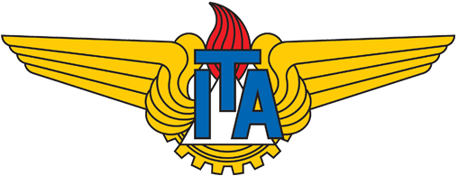
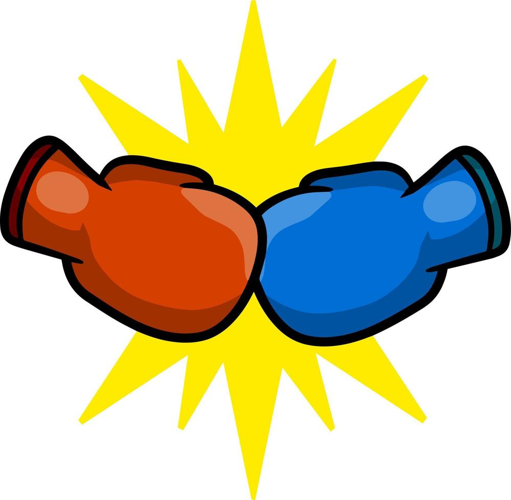
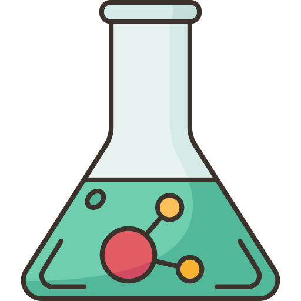

Meus planos atuais

ITA: Futuro piloto da aeronáutica
uma serie de estudos afim de entrar para a aeronáutica, estes estudos incluem o mais complexo dos seguintes assuntos: Física, Matemática, Química

BOXE: Além do esporte
Um dos meus hobbies favoritos

Química, Um gosto pessoal
Aqui conto sobre uma das minhas matérias favoritas senão, a Própria!